Teil 2 · Didaktik 2.2 · Generation 534411b8fa941f9a

Auf dem Logitmarkt liefert Lio für mögliche nächste Stücke Punktwerte. Sofi macht daraus eine Verteilung. Tempi verändert mit der Temperatur deren Schärfe; Kira und Pio begrenzen die Auswahl nach unterschiedlichen Regeln. Dann wird ein Stück gezogen und auf den Tisch gelegt. Beim nächsten Brückenglockenschlag wird erneut gerechnet. Eddas Schlussglocke beendet die Folge. Auch ausgeschriebene Zwischenstücke kosten jeweils einen weiteren Durchlauf und zusätzliche Plätze.
Rechne die Temperaturverteilung nach und wende Top-k und Top-p getrennt an. Zähle die zusätzlichen Stücke einer Zwischenrechnung und prüfe auch deren Inhalt.
Die verbleibenden Wahrscheinlichkeiten werden für die Ziehung normalisiert. Top-k zählt Kandidaten, Top-p arbeitet mit kumulierter Wahrscheinlichkeit. Zwischenstücke schaffen weitere Rechenschritte, kosten Kontext und Zeit und können selbst Fehler enthalten. Sampling und Filter garantieren keine richtige Antwort.
Unterscheide Punktwert, Wahrscheinlichkeit und Wahrheit. Die Brückenglocke zählt erzeugte Stücke; die Schlussglocke markiert das Ende. Eine kleine Temperatur ist keine Prüfung des Sachverhalts.